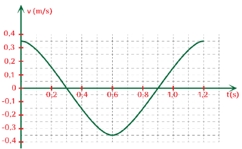
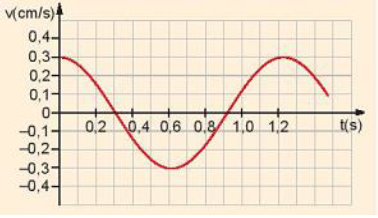

Bài 7 · Bài tập về sự chuyển hoá năng lượng · 12 câu
PHẦN III. Câu trắc nghiệm trả lời ngắn
Điền đáp số (có thể dùng dấu phẩy hoặc dấu chấm thập phân). Mỗi câu 0,25 điểm.
1
Nhận biết
Cho đồ thị vận tốc – thời gian của một con lắc đơn dao động điều hòa theo hình bên. Biết rằng khối lượng của vật treo vào sợi dây là 200 g.

Xác định vận tốc cực đại của vật (m/s).
m/s
2
Nhận biết
Một con lắc lò xo có vật nặng khối lượng $0,4$ kg, dao động điều hoà. Đồ thị vận tốc $v$ theo thời gian $t$ như hình.

Tính vận tốc cực đại của vật (cm/s).
cm/s
3
Thông hiểu
Một con lắc lò xo đặt nằm ngang gồm vật nặng khối lượng 1 kg và lò xo khối lượng không đáng kể có độ cứng 100 N/m dao động điều hoà. Trong quá trình dao động chiều dài của lò xo biến thiên từ 20 cm đến 32 cm. Cơ năng của con lắc bằng bao nhiêu J?
J
4
Thông hiểu
Một con lắc lò xo gồm lò xo có độ cứng $k=100$ N/m, vật nặng có khối lượng $m=200$ g, dao động điều hoà với biên độ $A=5$ cm. Xác định li độ (độ lớn) của vật tại thời điểm động năng của vật bằng 3 lần thế năng của con lắc (đơn vị cm).
cm
5
Thông hiểu
Một con lắc lò xo gồm lò xo có độ cứng $k=100$ N/m, vật nặng có khối lượng $m=200$ g, dao động điều hoà với biên độ $A=5$ cm. Xác định tốc độ của vật khi vật ở vị trí cân bằng (đơn vị cm/s, làm tròn 1 chữ số thập phân).
cm/s
6
Thông hiểu
Một con lắc lò xo gồm lò xo có độ cứng $k=100$ N/m, vật nặng có khối lượng $m=200$ g, dao động điều hoà với biên độ $A=5$ cm. Xác định thế năng của con lắc khi vật có li độ $x=-2,5$ cm (đơn vị J).
J
7
Thông hiểu
Một con lắc lò xo gồm lò xo có độ cứng $k=100$ N/m, vật nặng có khối lượng $m=200$ g, dao động điều hoà với biên độ $A=5$ cm. Tính tỉ số giữa thế năng và động năng tại vị trí $x=2,5$ cm.
8
Thông hiểu
Một con lắc đơn có khối lượng vật nặng $m=0,2$ kg, chiều dài dây treo $\ell$, dao động nhỏ với biên độ $s_0=5$ cm và chu kì $T=2$ s. Lấy $g=\pi^2=10$ m/s$^2$. Cơ năng của con lắc là bao nhiêu J?
J
9
Thông hiểu
Cho đồ thị vận tốc – thời gian của một con lắc đơn dao động điều hòa theo hình bên. Biết rằng khối lượng của vật treo vào sợi dây là 200 g.
Xác định tần số góc của con lắc (rad/s, làm tròn 2 chữ số thập phân). (Chu kì đọc từ đồ thị.)
rad/s
10
Thông hiểu
Cho đồ thị vận tốc – thời gian của một con lắc đơn dao động điều hòa theo hình bên. Biết rằng khối lượng của vật treo vào sợi dây là 200 g.
Xác định cơ năng của con lắc (J).
J
11
Thông hiểu
Cho đồ thị vận tốc – thời gian của một con lắc đơn dao động điều hòa theo hình bên. Biết rằng khối lượng của vật treo vào sợi dây là 200 g.
Xác định biên độ (cung) của vật (cm, làm tròn 2 chữ số thập phân).
cm
12
Vận dụng
Một vật có khối lượng m = 100 g DĐĐH có đồ thị biến thiên của li độ theo thời gian như hình bên. Lấy $\pi^2$ = 10. Cơ năng của vật là bao nhiêu J? (kết quả làm tròn đến 2 chữ số thập phân).